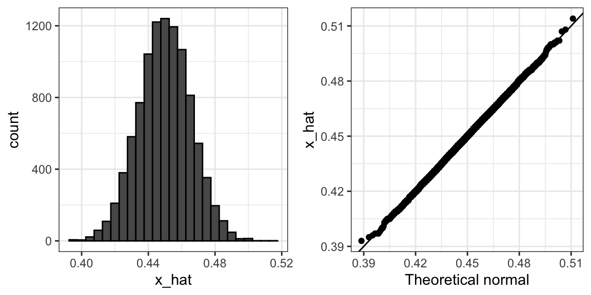

x_hat <- 0.48
se <- sqrt(x_hat*(1-x_hat)/25)
se
#> [1] 0.09997 Central Limit Theorem
The CLT tells us that the distribution function for a sum of draws is approximately normal. Additionally, we have learned that dividing a normally distributed random variable by a constant results in another normally distributed variable. This implies that the distribution of \(\bar{X}\) is approximately normal.
In summary, we have that \(\bar{X}\) has an approximately normal distribution with expected value \(p\) and standard error \(\sqrt{p(1-p)/N}\).
Now how does this help us? Suppose we want to know what is the probability that we are within 1% from \(p\). We are basically asking what is:
\[ \mbox{Pr}(| \bar{X} - p| \leq .01) \] which is the same as:
\[ \mbox{Pr}(\bar{X}\leq p + .01) - \mbox{Pr}(\bar{X} \leq p - .01) \]
Can we answer this question? We can use the mathematical trick we learned in the previous section: subtract the expected value and divide by the standard error to obtain a standard normal random variable, which we’ll denote as \(Z\), on the left. Since \(p\) is the expected value and \(\mbox{SE}(\bar{X}) = \sqrt{p(1-p)/N}\) is the standard error, we get:
\[ \mbox{Pr}\left(Z \leq \frac{ \,.01} {\mbox{SE}(\bar{X})} \right) - \mbox{Pr}\left(Z \leq - \frac{ \,.01} {\mbox{SE}(\bar{X})} \right) \]
One problem we have is that since we don’t know \(p\), we don’t know \(\mbox{SE}(\bar{X})\). However, it turns out that the CLT still works if we estimate the standard error by using \(\bar{X}\) in place of \(p\). We say that we plug-in the estimate. Our estimate of the standard error is therefore:
\[ \hat{\mbox{SE}}(\bar{X})=\sqrt{\bar{X}(1-\bar{X})/N} \] In statistics textbooks, we use a little hat to denote estimates. The estimate can be constructed using the observed data and \(N\).
Now we continue with our calculation, but dividing by \(\hat{\mbox{SE}}(\bar{X})=\sqrt{\bar{X}(1-\bar{X})/N})\) instead. In our first sample, we had 12 blue and 13 red, so \(\bar{X} = 0.48\) and our estimate of standard error is:
Now, we can answer the question of the probability of being close to \(p\). The answer is:
Therefore, there is a small chance that we will be close. A poll of only \(N=25\) people is not really very useful, at least not for a close election.
Earlier, we mentioned the margin of error. Now, we can define it simply as two times the standard error, which we can now estimate. In our case it is:
1.96*se
#> [1] 0.196Why do we multiply by 1.96? Because if you ask what is the probability that we are within 1.96 standard errors from \(p\), we get:
\[ \mbox{Pr}\left(Z \leq \, 1.96\,\mbox{SE}(\bar{X}) / \mbox{SE}(\bar{X}) \right) - \mbox{Pr}\left(Z \leq - 1.96\, \mbox{SE}(\bar{X}) / \mbox{SE}(\bar{X}) \right) \] which is:
\[ \mbox{Pr}\left(Z \leq 1.96 \right) - \mbox{Pr}\left(Z \leq - 1.96\right) \]
which we know is about 95%:
Hence, there is a 95% probability that \(\bar{X}\) will be within \(1.96\times \hat{SE}(\bar{X})\), in our case within about 0.2, of \(p\). Observe that 95% is somewhat of an arbitrary choice and sometimes other percentages are used, but it is the most commonly used value to define margin of error. We often round 1.96 up to 2 for simplicity of presentation.
In summary, the CLT tells us that our poll based on a sample size of \(25\) is not very useful. We don’t really learn much when the margin of error is this large. All we can really say is that the popular vote will not be won by a large margin. This is why pollsters tend to use larger sample sizes.
From the table above, we see that typical sample sizes range from 700 to 3500. To see how this gives us a much more practical result, consider that if we had obtained a \(\bar{X}\)=0.48 with a sample size of 2,000, our standard error \(\hat{\mbox{SE}}(\bar{X})\) would have been 0.0111714. So our result is an estimate of 48% with a margin of error of 2%. In this case, the result is much more informative and would lead us to believe that there are more red balls than blue. Keep in mind, however, that this is hypothetical. We did not take a poll of 2,000, since we don’t want to ruin the competition.
7.1 A Monte Carlo simulation
Suppose we want to use a Monte Carlo simulation to corroborate the tools we have developed using probability theory. To create the simulation, we would write code like this:
The problem is, of course, that we don’t know p. We could construct an urn, similar to the one pictured above, and conduct an analog simulation (without a computer). While time-consuming, we could take 10,000 samples, count the beads, and track the proportions of blue. We can use the function take_poll(n=1000), instead of drawing from an actual urn, but it would still take time to count the beads and enter the results.
Therefore, one approach we can use to corroborate theoretical results is to pick one or several values of p and run simulations. Let’s set p=0.45. We can then simulate a poll:
In this particular sample, our estimate is x_hat. We can use that code to do a Monte Carlo simulation:
To review, the theory tells us that \(\bar{X}\) is approximately normally distributed, has expected value \(p=\) 0.45, and standard error \(\sqrt{p(1-p)/N}\) = 0.0157321. The simulation confirms this:
A histogram and qqplot confirm that the normal approximation is also accurate:

Of course, in real life, we would never be able to run such an experiment because we don’t know \(p\). However, we can run it for various values of \(p\) and \(N\) and see that the theory does indeed work well for most values. You can easily do this by rerunning the code above after changing the values of p and N.
7.2 The spread
The objective of the competition is to predict the spread, not the proportion \(p\). However, since we are assuming there are only two parties, we know that the spread is \(\mu = p - (1-p) = 2p - 1\). As a result, everything we have done can easily be adapted to an estimate of \(\mu\). Once we have our estimate \(\bar{X}\) and \(\hat{\mbox{SE}}(\bar{X})\), we estimate the spread with \(2\bar{X} - 1\) and, since we are multiplying by 2, the standard error is \(2\hat{\mbox{SE}}(\bar{X})\). Note that subtracting 1 does not add any variability, so it does not affect the standard error.
For our 25 item sample above, our estimate \(p\) is .48 with margin of error .20, and our estimate of the spread is0.04with margin of error.40`. Again, this is not a very useful sample size. Nevertheless, the point is that, once we have an estimate and standard error for \(p\), we have it for the spread \(\mu\).
We use \(\mu\) to denote the spread here and in the next sections because this is the typical notation used in statistical textbooks for the parameter of interest. The reason we use \(\mu\) is that a population mean is often the parameter of interest, and \(\mu\) is the Greek letter for m.
7.3 Bias: Why not run a very large poll?
For realistic values of \(p\), let’s say ranging from 0.35 to 0.65, if we conduct a very large poll with 100,000 people, theory tells us that we would predict the election perfectly, as the largest possible margin of error is around 0.3%:
#> Warning: `qplot()` was deprecated in ggplot2 3.4.0.
One reason is that conducting such a poll is very expensive. Another, and possibly more important reason, is that theory has its limitations. Polling is much more complicated than simply picking beads from an urn. Some people might lie to pollsters, and others might not have phones. However, perhaps the most important way an actual poll differs from an urn model is that we don’t actually know for sure who is in our population and who is not. How do we know who is going to vote? Are we reaching all possible voters? Hence, even if our margin of error is very small, it might not be exactly right that our expected value is \(p\). We call this bias. Historically, we observe that polls are indeed biased, although not by a substantial amount. The typical bias appears to be about 1-2%. This makes election forecasting a bit more interesting, and we will explore how to model this in a later section.
7.4 Exercises
1. Write an urn model function that takes the proportion of Democrats \(p\) and the sample size \(N\) as arguments, and returns the sample average if Democrats are 1s and Republicans are 0s. Call the function take_sample.
2. Now assume p <- 0.45 and that your sample size is \(N=100\). Take a sample 10,000 times and save the vector of mean(X) - p into an object called errors. Hint: Use the function you wrote for exercise 1 to write this in one line of code.
3. The vector errors contains, for each simulated sample, the difference between the actual \(p\) and our estimate \(\bar{X}\). We refer to this difference as the error. Compute the average and make a histogram of the errors generated in the Monte Carlo simulation, and select which of the following best describes their distributions:
- The errors are all about 0.05.
- The errors are all about -0.05.
- The errors are symmetrically distributed around 0.
- The errors range from -1 to 1.
4. The error \(\bar{X}-p\) is a random variable. In practice, the error is not observed because we do not know \(p\). Here, we observe it since we constructed the simulation. What is the average size of the error if we define the size by taking the absolute value \(\mid \bar{X} - p \mid\)?
5. The standard error is related to the typical size of the error we make when predicting. For mathematical reasons related to the Central Limit Theorem, we actually use the standard deviation of errors, rather than the average of the absolute values, to quantify the typical size. What is this standard deviation of the errors?
6. The theory we just learned tells us what this standard deviation is going to be because it is the standard error of \(\bar{X}\). What does theory tell us is the standard error of \(\bar{X}\) for a sample size of 100?
7. In practice, we don’t know \(p\), so we construct an estimate of the theoretical prediction based by plugging in \(\bar{X}\) for \(p\). Compute this estimate. Set the seed at 1 with set.seed(1).
8. Note how close the standard error estimates obtained from the Monte Carlo simulation (exercise 5), the theoretical prediction (exercise 6), and the estimate of the theoretical prediction (exercise 7) are. The theory is working and it gives us a practical approach to knowing the typical error we will make if we predict \(p\) with \(\bar{X}\). Another advantage that the theoretical result provides is that it gives an idea of how large a sample size is required to obtain the precision we need. Earlier, we learned that the largest standard errors occur for \(p=0.5\). Create a plot of the largest standard error for \(N\) ranging from 100 to 5,000. Based on this plot, how large does the sample size have to be to have a standard error of about 1%?
- 100
- 500
- 2,500
- 4,000
9. For sample size \(N=100\), the Central Limit Theorem tells us that the distribution of \(\bar{X}\) is:
- practically equal to \(p\).
- approximately normal with expected value \(p\) and standard error \(\sqrt{p(1-p)/N}\).
- approximately normal with expected value \(\bar{X}\) and standard error \(\sqrt{\bar{X}(1-\bar{X})/N}\).
- not a random variable.
10. Based on the answer from exercise 8, the error \(\bar{X} - p\) is:
- practically equal to 0.
- approximately normal with expected value \(0\) and standard error \(\sqrt{p(1-p)/N}\).
- approximately normal with expected value \(p\) and standard error \(\sqrt{p(1-p)/N}\).
- not a random variable.
11. To corroborate your answer to exercise 9, make a qq-plot of the errors you generated in exercise 2 to see if they follow a normal distribution.
12. If \(p=0.45\) and \(N=100\) as in exercise 2, use the CLT to estimate the probability that \(\bar{X}>0.5\). Assume you know \(p=0.45\) for this calculation.
13. Assume you are in a practical situation and you don’t know \(p\). Take a sample of size \(N=100\) and obtain a sample average of \(\bar{X} = 0.51\). What is the CLT approximation for the probability that your error is equal to or larger than 0.01?